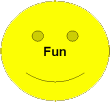
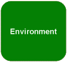
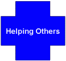
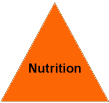
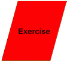
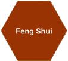
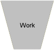
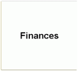

Inspiration for a healthy life
Health isn’t only food and exercise. Healfi looks at 12 areas of life that need balance. Pick a card to start.
Inspiration for a healthy life
 |
  |
|
 |
||
 |
||
 |
  |
The Healfi Inspiration Cards cover 12 areas that should be balanced for a healthy life.
1. Mindset
What we put into our minds is probably more important than what we put into our bodies. In the mindset chapter, you will find attitudes that are crucial to feel well (integrity, gratitude, optimism, responsibility...) and tools that can help you improve your mindset (affirmations, visualization, meditation, journal...).
2. Other People
This chapter stresses the importance of social life and explains some rules that should help you feel better when interacting with other people (Golden Rule, forgive, respect, smile, promises, gossip...).
3. Life Partner
In this chapter we try and help people find their soul mate and list some important points for relationships (communications, honesty, rules, spontaneity...). We have also listed some literature for the "funny business" part of relationships.
4. Finances
This is a tricky one as it will most probably interfere (at least at the beginning) with you following your passions in life. It is a fact that you will not feel well if you have to constantly struggle financially, but on the other hand, you will not feel well if the job you are doing is only for the money.
5. Work
In this chapter we look at work-life balance and a few things you can do to optimise your current work situation (more freedom, delegate...). But above all, we want to stress the importance of doing what you love, try and make sure you like what you do on a daily basis.
6. Feng Shui
Feng Shui is the ancient Chinese art of enhancing and harmonizing the flow of energy in your surrounding for better health, wealth and personal relationships. So make sure that your living spaces are clutter-free and that you feel comfortable where you are living and working.
7. Exercise
Healfi sees exercise as everything that you can do in order to keep your body fit for optimal health. Next to physical training and the training of your senses, this chapter looks into the importance of posture, breath, hygiene and sleep.
8. Nutrition
What, when and how you eat has a direct impact on how you feel. With all the current contradictory theories, Healfi appeals to everybody's common sense to judge what is best for them. Please understand that nutrition is not a logical science. It is not enough to count calories, you need to vary your input, eat natural food and above all, take your time and enjoy the food you eat.
9. Fun
Life is supposed to be fun. Next to many ideas to help you have fun and enjoy life, this chapter looks at how you can boost your creativity. You might have noticed that many centenarians have a great sense of humour. So think twice before you take life too seriously!
10. Environment
Everything is connected. So the way you treat the environment directly reflects back on you and your health. This chapter looks at how you can best interact with the environment for optimal health (get out in nature, get plenty of daylight and sun...) and what you can do to minimize your impact on the environment (recycle, reuse, bicycle, minimize water and electricity usage...).
11. Helping Others
By helping others, you help yourself. If you have a helping mindset, you will see that life gets so much easier, you will feel better and have no negative stress. If your boss forgets to tell you, take a moment for yourself and think about all the ways you help people just by doing your daily job (helping your colleagues, your boss, your clients...). Of course, you will feel even better if you help people outside of work as well (family, old people, charities...).
12. Time
The way you handle your time has a huge impact on your well-being. This chapter looks at some points to help you improve your time management. It also looks into some major stress sources in your life: noise pollution, information pollution, worries. As with nutrition, time is not a logical science either.
We wish you a lot of inspiration discovering this website!